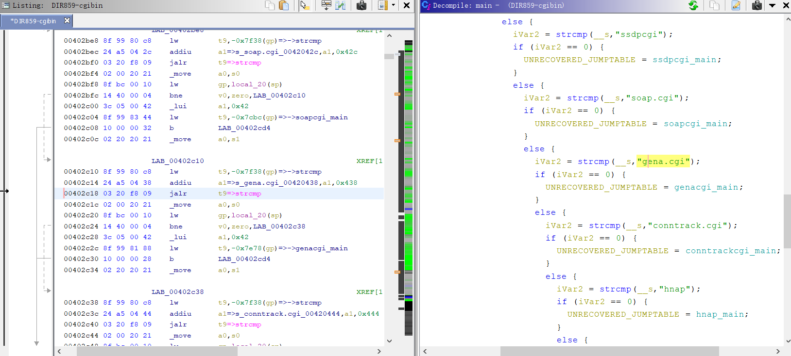

D-Link RCE CVE-2019-17621分析
漏洞介绍
The UPnP endpoint URL /gena.cgi in the D-Link DIR-859 Wi-Fi router 1.05 and 1.06B01 Beta01 allows an Unauthenticated remote attacker to execute system commands as root, by sending a specially crafted HTTP SUBSCRIBE request to the UPnP service when connecting to the local network.
这是CVE官网对于CVE-2019-17621的描述，从描述中可以看出漏洞出现在涉及UPnP订阅请求的代码中，漏洞目标是D-Link DIR-859路由器，固件版本为1.06b01 Beta01, 1.05，该漏洞是无需认证的远程代码执行漏洞（一般处于局域网中）。
根据研究人员Miguel Mendez Z.的介绍，该漏洞还影响以下产品：
分析环境
| 测试环境 | 备注 | |
|---|---|---|
| 操作系统 | Ubuntu 16.04 LTS | |
| 系统仿真工具 | Firmadyne | |
| 反编译工具 | Ghidra | |
| 分析固件 | DIR-859 1.05版本 | ftp://ftp2.dlink.com/PRODUCTS/DIR-859/DIR-859_REVA_FIRMWARE_v1.05B03.zip |
Firmadyne是一款自动化和可裁剪的嵌入式Linux系统固件分析框架，它支持系统固件逆向QEMU嵌入式系统模拟执行，使用其可模拟执行路由器固件，安装和使用方法https://github.com/firmadyne/firmadyne。之后的文章会可能会对该工具进一步介绍。
Ghidra是由美国国家安全局（NSA）研究部门开发的软件逆向工程（SRE）套件，用于支持网络安全任务。 Ghidra具有反编译功能，查看、定位反编译后的代码相较于IDA有优势。 针对MIPS架构代码的反编译功能较好。
upnp
在涉及到upnp订阅请求的代码中发现了漏洞，那么简单了解下upnp协议。
随着越来越多的设备联入网络，对于共享设备以及共享设备提供的资源和服务的需求也越来越强烈，透明的访问各种联入网络的资源也成为了一种非常复杂的任务。因此，在1999年，Microsoft公司开始大张旗鼓地宣传下一代即插即用技术–通用即插即用（ Universal Plug and Play，简称UPnP）。UPnP实际上是扩展了传统单机的设备和计算机系统的概念，在”零配置”的前提下提供了连网设备之间的发现、接口声明和其他信息的交换等互动操作功能。Microsoft公司称”UPnP将延伸到家庭中的每一个设备，它会成为个人电脑、应用程序、智能设备集成工作所必需的框架、协议和接口标准”。
UPnP是实现智能设备端到端网络连接的结构。它也是一种架构在TCP/IP和HTTP技术之上的，分布式、开放的网络结构，以使得在联网的设备间传递控制和数据。UPnP 技术实现了 控制点、设备和 服务之间通讯的支持，并且设备和相关服务的也使用XML定义并且公布出来。使用UPnP，设备可以动态加入网络，自动获得一个IP地址，向其他设备公布它的能力或者获知其他设备的存在和服务，所有这些过程都是自动完成的，此后设备能够彼此直接通讯。
UPnP不需要设备驱动程序，因此使用UPnP建立的网络是介质无关的。同时UPnP使用标准的TCP/IP和网络协议，使它能够无缝的融入现有网络。构造UPnP应用程序时可以使用任何语言，并在任何操作系统平台上编译运行。对于设备的描述，使用HTML表单表述设备控制界面。它既允许设备供应商提供基于浏览器的用户界面和编程控制接口，也允许开发人员定制自己的设备界面。
由于该漏洞主要涉及到upnp订阅请求处理函数，订阅事件定义在gena协议中，下面介绍下upnp网络中的设备事件。
设备事件
设备事件是UPnP网络的第四步。一个服务的UPnP描述包括服务响应的动作列表和运行时模拟服务状态的变量列表。当这些变量改变时，服务就会发布更新，则控制点就会收到设备事件。设备事件发送的一般过程如下图：
为了订阅事件，订阅者发送一个订阅消息。如果出版者收到此消息，它将以这个订阅的持续时间作为响应。为了保持订阅，订阅者必须在订阅到期之前进行续订。在订阅者不需要出版者发送的事件时，订阅者必须取消这个订阅。出版者通过发送事件消息提醒订阅者状态变量改变。事件消息包含多个状态变量的名字和这些变量的当前值。在订阅者第一次订阅时，需要发送初始化事件消息，这个事件包含所有事件变量的名和值并且允许订阅者出示化服务变量值。为了支持多个控制点，在动作生效之后所有订阅者都将接到通知。事件消息使用HTTP协议传送，事件详细定义在通用事件通知结构（General Event Notification Architecture）协议中。
关于upnp的具体实现细节不在这里叙述啦。
漏洞分析
利用binwalk能够直接解压固件，先在文件系统中查找是否有gena.cgi的文件
find . -name "gena.cgi"
或包含gena.cgi的文件
grep -nr "gena.cgi" .
定位到/htdocs/cgibin，利用Ghidra直接反编译，其中main()函数中比较最后一个’/‘之后的参数是否等于gena.cgi。

之后跳转到genacgi_main()函数.
该函数在处理UPnP订阅请求过程中，存在远程执行代码漏洞，Ghidra反编译得到genacgi_main()的伪码。（为了方便阅读，对变量进行更名）
undefined4 genacgi_main(void)
{
request_method = getenv("REQUEST_METHOD");
if (request_method == (char *)0x0) {
return 0xffffffff;
}
request_uri = getenv("REQUEST_URI");
request_uri_0x3f = strchr(request_uri,0x3f);
if (request_uri_0x3f == 0) {
return 0xffffffff;
}
cmp_service = strncmp(request_uri_0x3f,"?service=",9);
if (cmp_service != 0) {
return 0xffffffff;
}
cmp_service = strcasecmp(request_method,"SUBSCRIBE");
request_uri_0x3f = request_uri_0x3f + 9;
/* 如果不是SUBSCRIBE */
if (cmp_service != 0) {
cmp_service = strcasecmp(request_method,"UNSUBSCRIBE");
...
}
request_method = getenv("SERVER_ID");
http_sid = getenv("HTTP_SID");
http_callback = getenv("HTTP_CALLBACK");
http_timeout = getenv("HTTP_TIMEOUT");
http_nt = getenv("HTTP_NT");
remote_addr = getenv("REMOTE_ADDR");
if (http_sid == (char *)0x0) {
cmp_service = strcmp(http_nt,"upnp:event");
request_uri = 0x19c;
if ((cmp_service == 0) && (http_callback != (char *)0x0)) {
cmp_service = strcasecmp(http_timeout,"Second-infinite");
real_timeout = 0;
if (cmp_service != 0) {
cmp_service = strncasecmp(http_timeout,"Second-",7);
request_uri = 400;
if (cmp_service != 0) goto LAB_004103d8;
real_timeout = atoi(http_timeout + 7);
}
sVar1 = strlen(http_callback);
if (http_callback[sVar1 - 1] == '>') {
http_callback[sVar1 - 1] = '\0';
}
http_callback = http_callback + (*http_callback == '<');
cmp_service = strncmp(http_callback,"http://",7);
request_uri = 0x19c;
if (cmp_service == 0) {
http_sid = strchr(http_callback + 7,0x2f);
if (http_sid != (char *)0x0) {
*http_sid = '\0';
pid = getpid();
/* 漏洞点 */
sprintf(buf,
"%s\nMETHOD=SUBSCRIBE\nINF_UID=%s\nSERVICE=%s\nHOST=%s\nURI=/%s\nTIMEOUT=%d\nREMOTE=%s\nSHELL_FILE=%s/%s_%d.sh"
,"/htdocs/upnp/run.NOTIFY.php",request_method,request_uri_0x3f,http_callback + 7,
http_sid + 1,real_timeout,remote_addr,"/var/run",request_uri_0x3f,pid);
/* 处理buf */
xmldbc_ephp(0,0,buf,stdout);
fflush(stdout);
pid = getpid();
sprintf(buf,"NOTIFY:0:sh %s/%s_%d.sh","/var/run",request_uri_0x3f,pid);
xmldbc_timer(0,0,buf);
return 0;
}
request_uri = 0x19c;
}
}
}
......